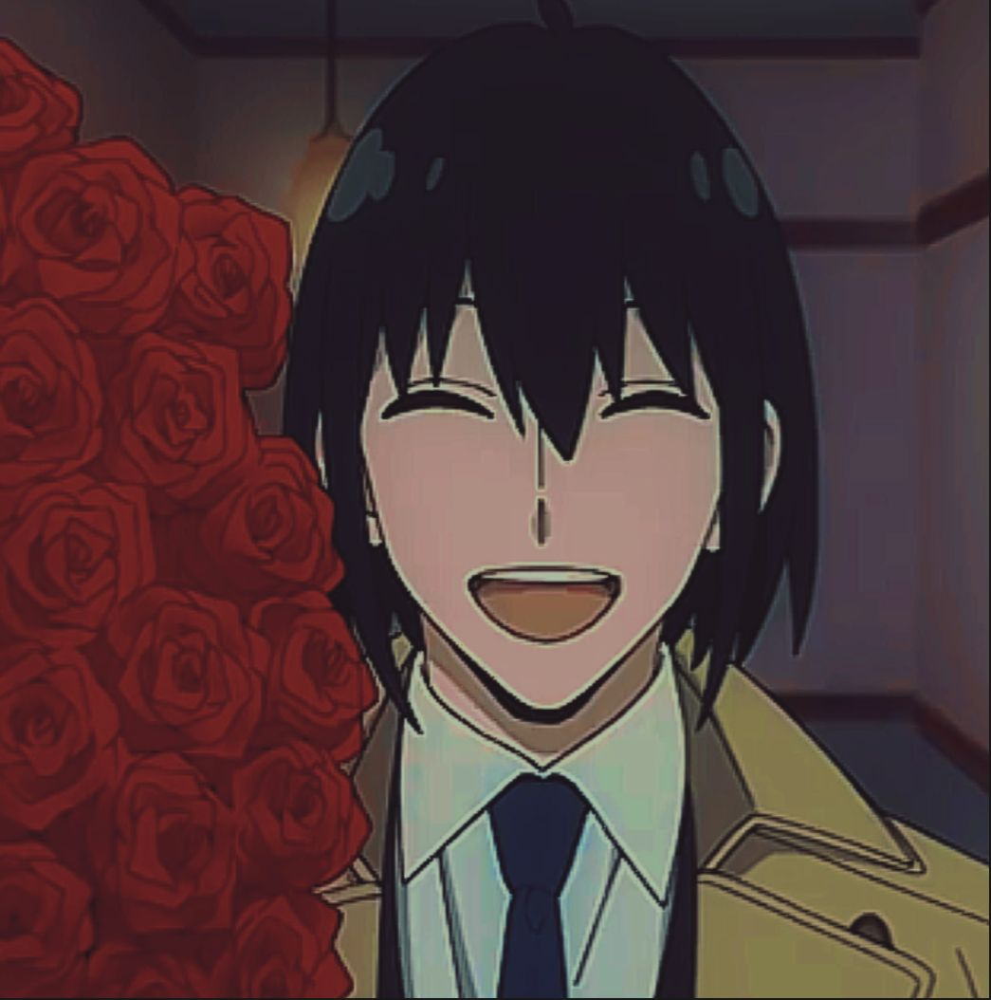

Relationships

Loid Forger(Husband)

Anya Forger(Daughter)
Bond Forger(Pet)
Yuri Briar(Younger Brother)
Yor Forger
Yor Forger is the third main character in Spy X Family. While she works as an ordinary worker at Berlint City Hall, she also leads an unknown life as an assassin with the code name "Thorn Princess". She and Loid Forger got married for separate goals, along with becoming the mother of the adopted child, Anya.
Appearance
Yor is a very beautiful, graceful and fairly tall young woman with fair skin, long black hair, and upturned red eyes. She splits her hair into two parts and crosses it over her head, securing it with a headband and forming two thick locks of hair that reach below her chest. When her hair is down, she lacks the usual two thick locks of hair, and her hair reaches about mid-back.
|
|---|
| Gender: | female |
|---|---|
| Age: | 27 |
| Height: | 170cm(5'7) |
| Hair-color: | Black |
| Eye-color: | Red |
| Abilities: | Strength, Speed, Reflex, Durability, Stamina, Trained Combatant, Cleaning, Intelligence, Poison Tolerance, Weapons, and Teaching(especially physical training) |
| Weakness: | Alcohol, Cooking, Lying, Book Smarts |
|
Loid Forger(Husband) |
Anya Forger(Daughter) |
Bond Forger(Pet) |
 Yuri Briar(Younger Brother) |
|---|